Making Quad Lock
AI-Native
From scattered experimentation to systematic capability. 120 people. Six functions. One clear path to $2.5M per head.
Quad Lock has the ambition, the talent, and the early experimentation to become the 'AI-native' success story that you are envisioning. This proposal outlines a 3-month, $85,000 program to turn scattered pockets of AI adoption into systematic, company-wide capability, targeting a lift in revenue per head from $2M to $2.5M. Phase 0 starts at $10,000 with a decision gate before any further commitment. Let's do this!
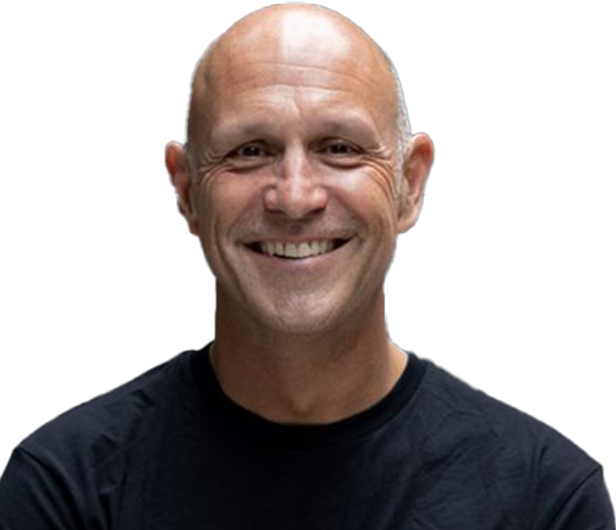
"How do we start getting people geared towards the value-add work?"Andrew Poole, CEO — Quad Lock
Not just use AI. Not just talk about AI. Become a business where AI is woven into how every team thinks, works, and delivers. With a measurable target: lift revenue per head from $2M to $2.5M.
After spending time with your leadership team, one thing is clear: Quad Lock isn't starting from zero. You have people in marketing already using Claude Code daily. You have implemented a supply chain invoice verification agent that automates 30% of a role, in minutes. You have product development using PatSnap and Vizcom. The raw capability is already in the building.
"How do we become an AI-native business? And what sort of process would we need to go on to have that as an outcome?"Ben Goss, CMO — Quad Lock
What's missing isn't talent or ambition. It's the connective tissue. A systematic framework that takes what your best people are doing in isolation and turns it into company-wide capability. Governance that gives everyone confidence to move faster. Validation processes that prove AI outputs are trustworthy before you rely on them. And a clear path from pockets of excellence to an AI-native organisation.
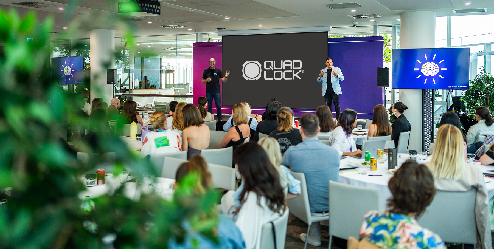
"How a 120-person global consumer brand went from mixed AI experimentation to enterprise-wide AI-native capability, lifting revenue per head by 25%."The North Star — where this program is designed to take you
That's not a case study yet. But it can be. The difference between isolated 10% gains and company-wide 25%+ productivity lifts is exactly the gap this program closes.
Two Conversations. A Detailed Picture.
Through our discovery call and leadership briefing, I built a clear understanding of where Quad Lock is today, where the quick wins are, and what needs to happen to get to $2.5M per head.
"The gold standard outcome would be if we could get to a point of a single source of truth. At the moment, we all talk about a number through a different lens."Andrew Poole, CEO — Quad Lock
Google Workspace with Claude and ChatGPT across the business. PatSnap for IP research. Vizcom for product design. Other AI tools in play.
Marketing is advanced (coding, dashboards). Supply chain is deploying agents. Product is mid-level. Finance and People & Culture are early stage.
Where the Quick Wins Are
Invoice verification
Already deployed, automating 30% of a role. Next step: upskill the team to own it internally, run side-by-side validation, and replicate the pattern.
Email and meeting cadence
AI-powered email triage and meeting action capture. Nothing gets missed, turnarounds accelerate, action items are tracked automatically.
Brand guardian agent
Packaging specs, product images, and marketing assets checked against brand guidelines before sign-off. Catches inconsistencies before they reach the market.
Spec drafting and supplier briefs
AI drafts initial specifications and supplier communication from design intent. Frees the product team for the physical validation work that only they can do.
Self-serve reporting dashboards
Connect to existing data, let team leads build their own views. Monday morning insights instead of Wednesday afternoon reports. Addresses the single source of truth goal directly.
Bank recs, credit cards, and marketplace reconciliation
Build agents that automate bank reconciliations, credit card transaction processing, and income reconciliation across Shopify, Amazon, and eBay. Working outside NetSuite, respecting your security posture, at a fraction of the cost of third-party platforms.
Customer response and knowledge base
AI drafts responses to common queries using Quad Lock's brand voice. Humans review and send. Faster response times, consistent quality across regions.
Competitive intelligence monitor
AI scans competitor activity, new product launches, pricing changes, and surfaces a weekly digest. Frees the marketing team from manual monitoring.
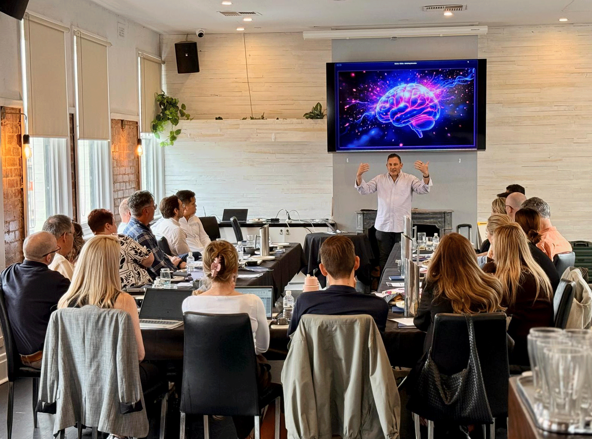
The Real Challenges
The $2M to $2.5M question
Ben asked the right challenge: if we're not shedding people, where does the revenue per head growth come from? The answer is two-fold. First, external cost reduction: legal, web development, subscriptions, and outsourced work brought in-house. Second, capacity: your existing team doing more high-value work because AI handles the repetitive tasks. Both are measurable. Both start delivering in weeks.
Physical product validation needs proof
Steven raised an important point: most AI case studies are software and digital. Quad Lock makes a physical product that needs real-world durability testing. AI won't replace a drop test. But it can accelerate research synthesis, specification drafting, supplier coordination, patent analysis, and the operational work that surrounds physical product development. In a recent engagement with a consumer goods client, AI cut spec drafting and supplier briefing time by over 60%, freeing the product team to focus entirely on the physical work that only they can do.
Security constraints are real and respected
Your IT team has rightly prohibited direct AI connections to NetSuite. We work within that boundary, not against it. Agents operate outside the ERP: export, process, validate, then import. No direct system access. No security compromises. And at a fraction of the cost of third-party platforms that quoted $200K per year for the same outcomes.
Nobody gets left behind
Brea flagged a real concern: people on leave, in different time zones, or at different experience levels can't be forgotten in a rapid transformation. This program is designed with monthly workshops, alternate session scheduling, and a structured catch-up framework so that every person at Quad Lock has the opportunity to grow with AI, regardless of when they join the journey.
What Makes This Opportunity Different
Many businesses I work with are starting from scratch. Quad Lock has builders who are already ahead. An invoice agent in supply chain. Claude Code usage in marketing. PatSnap in product development. The foundation is laid.
This program takes those pockets of excellence and turns them into company-wide capability. We connect the dots, fill the gaps, add the governance, and build the internal self-sufficiency so Quad Lock doesn't need me in six months.
The goal isn't dependency. It's self-sufficiency within weeks, not months.
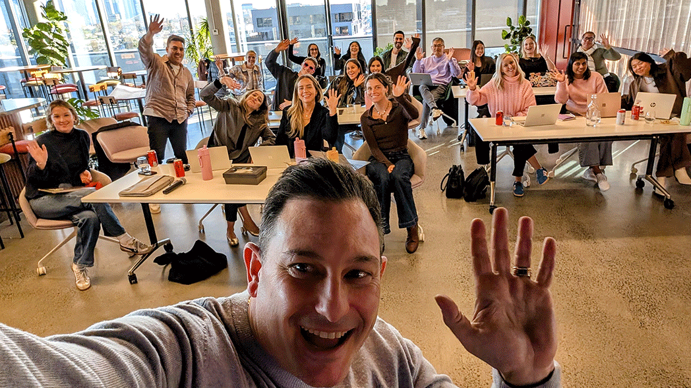
From 1,000 Ideas to
50 Powerful Deliverables
Before we build anything, we need to hear from every corner of the business. Not just leadership. Every person who touches a workflow, manages a process, or has an idea they've been sitting on.
The Interview Bot
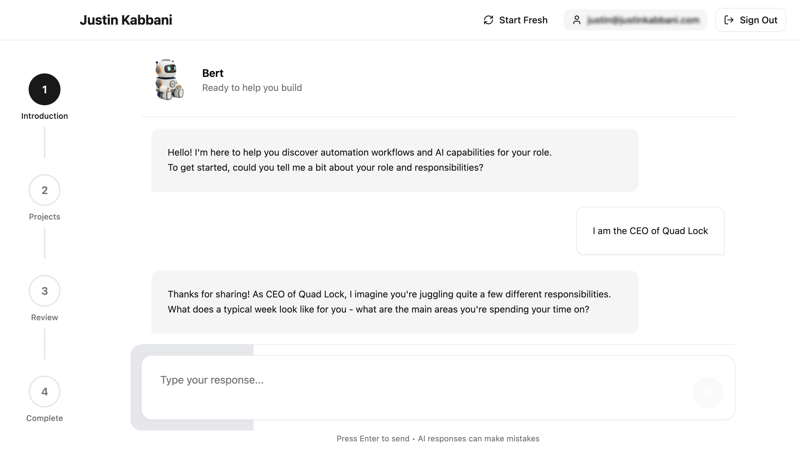
A custom AI chatbot deployed across Quad Lock in two waves. It has structured conversations with every team member, asking the right questions to surface opportunities, pain points, and ideas that would never come up in a group workshop.
Leadership First
Deployed to the leadership team before the workshop. Surfaces strategic priorities and executive-level opportunities
Full Team
Deployed to the broader team after the workshop. Captures ground-level ideas from every function
Ongoing
Stays active throughout the program. New ideas flow in continuously as people's AI literacy grows
Prioritised
Every idea lands on the Eisenhower Matrix. Short-term wins and medium-term builds are balanced and sequenced
The Eisenhower Matrix: Where Every Idea Lands
Every idea is plotted by urgency and impact. This becomes the living roadmap that drives what we build, when we build it, and who builds it.
Do First
- Invoice verification ownership
- Governance framework
- Bank reconciliation agent
- Email/meeting action capture
Schedule
- Marketplace income reconciliation
- Self-serve dashboards
- Competitive intelligence
- CX knowledge base
Delegate / Automate
- Subscription audits
- Meeting notes automation
- Template generation
- Data entry tasks
Backlog
- Exploratory R&D projects
- Nice-to-have integrations
- Long-term tool evaluation
Example starting point. The real matrix is populated from interview bot data and refined with your leadership team at every check-in.
From Ideas to Compounding Capability
These prioritised ideas become the deliverables. Each one is a gem, agent, workflow, or prompt that your team builds with guidance. As people build, they learn. As they learn, they generate better ideas. The matrix evolves. The capability compounds.
This is not a static plan. It's a living system that gets smarter as your team gets smarter.
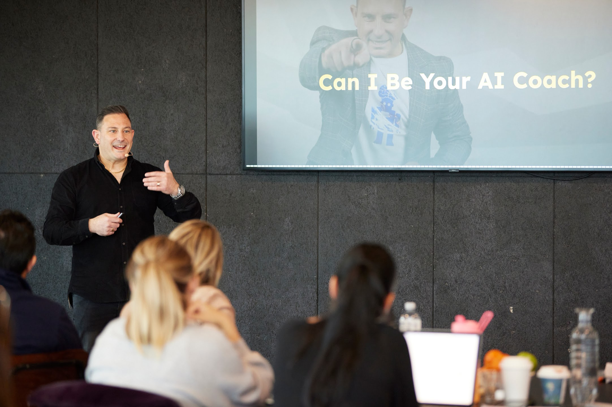
What Quad Lock Will Look Like
in Three Months
Before we talk about how we get there, here's where you'll be.
Leadership Team
- Fluent in AI. Using Claude, Gemini, and other tools daily as default behaviour
- Modelling AI use for their teams. Setting the tone from the top
- Clear on governance: what's safe, what's not, where the boundaries are
- Making faster, better-informed decisions with unified reporting
- Confident in the validation framework: knowing when to trust AI output and when to verify
Every Function
- Each function has its own AI playbook: prompt libraries, workflow templates, and documented use cases
- Supply chain's invoice agent is owned internally and replicated across teams
- Marketing has moved from competent to advanced: building agents and coaching peers
- Product dev has AI accelerating research and specs (physical validation stays human-led)
- Internal champions who sustain capability independently
The Organisation
- Governance framework in place. Data classification, tool standards, usage guidelines, prompt governance, and agent safety
- Zero-trust validation processes documented: AI and human processes run in parallel until confidence is earned
- Clear measurement system tracking hours saved, external costs reduced, and value created
- International team members join all sessions via Zoom. One program, one team, regardless of location
- Inclusive catch-up framework so people on leave, in different time zones, or starting later are never left behind
"I see my team building their own AI agents as our best path forward."Mark Spencer, CFO — Quad Lock
"We're a pretty small team, there's a lot of work on, no one's hesitant to say how potentially could we improve our processes by implementing something like this."Peter Bainbridge, COO — Quad Lock
The Outcome
- Revenue per head on a clear trajectory from $2M toward $2.5M, driven by measurable cost reductions and capacity gains
- Your existing builders are elevated. Your emerging users are confident. Every function has tangible wins they can point to
- Quad Lock has the story: a global consumer brand that became AI-native while keeping its people at the centre

Two Paths to $2.5M Per Head
Ben, you asked the right question: if we're not shedding people, where does the growth come from? The answer is two-fold.
Path 1: External Cost Reduction
Money you stop spending externally. These savings drop straight to the bottom line and directly improve revenue per head.
| Opportunity | Estimated Value |
|---|---|
|
Legal pre-check automation 80% reduction in contracts sent to external counsel [Estimate] |
Significant |
|
Subscription audits Monthly credit card reviews across marketing and finance |
$5K-$20K/yr |
|
Third-party platform costs avoided Finance automation platforms quoted at $200K+/yr. Build your own agents instead |
$200K+/yr |
|
In-house capability building Work currently outsourced (web, content, reporting) brought internal |
Significant |
Path 2: Capacity Unlocked
Time your people get back. This capacity goes into higher-value work: strategy, creativity, customer experience, and growth.
80 knowledge workers x 3 hrs/week x $50/hr [Estimate]
2-3 FTEs not needed to scale [Estimate]
Already in progress, expandable
Total quantifiable Year 1 value
The $85K investment represents roughly 9-10% of the value created in Year 1.
All estimates validated during the program. Quick wins start delivering in weeks. These gains flow directly into the metrics that matter: revenue per head, operating efficiency, and margin improvement.
Zero-Trust. Proof First.
Mark, you asked the right question: how much validation do businesses do when switching from human to AI processes? Here's the answer: we don't switch. We prove.
Graduated Trust Model
Any function, any team can stay at any level until they're confident. Your supply chain team is already doing this.
AI hallucination is real. We build for it.
When Claude attributes a sales variance to "seasonal factors" and the real cause was a one-time customer refund, that's not a minor error. It's a trust-destroying one. Every analytical output in this program is designed with validation checkpoints: AI drafts, humans verify against source data before anyone acts on it. No blind trust. No confident fiction. If the output can't be verified, it doesn't ship.
Side-by-Side Testing
Every AI process runs alongside the existing human process for a minimum validation period. We formalise that pattern and apply it everywhere.
Physical Product Boundaries
AI accelerates research, specs, patents, and supplier coordination. Physical testing and durability validation stay human-led. More time for the work only your team can do.
How We Get There
Built around the Compounding Capability Model: small, repeatable improvements that stack over time. Quick wins in weeks. Self-sufficiency within months.
Who Attends What
| Session | Leadership | Function Leads | Broader Team | Duration |
|---|---|---|---|---|
| Interview Bot | Required | Required | Required | 15 min async |
| Leadership Workshop | Required | Optional | Half day | |
| Town Hall | Required | Required | Required | 1.5 hours |
| Full-Day Training | Optional | Required | Required | Full day |
| Functional Deep Dives | Required | Required | 3 hrs each | |
| Leadership Check-Ins | Required | 90 min x 3 |
Leadership Upskill
1. Half-Day Leadership Workshop (in-office, South Yarra)
- Hands-on session with Ben, Andrew, Mark, Sam, Nigel, and the leadership team
- Claude, Gemini, and the tools your team is already using. Practical, not theoretical
- Live demonstrations built around Quad Lock's actual workflows
- Data security, governance, and the validation framework
- Walk out with use cases leadership can start testing immediately
2. Interview Bot Deployment (Leadership Wave)
- Deploy the custom interview bot to leadership team before the workshop
- Structured AI conversations that surface strategic priorities, pain points, and opportunities
- Output: initial Eisenhower matrix with ~100 ideas prioritised by urgency and impact
- Customise the leadership workshop deliverables based on what the bot surfaces
3. Governance Framework Delivery
- Data classification: what's safe with AI, what's not
- Tool standards, prompt governance, and agent safety
- Zero-trust validation protocol for human-to-AI process transitions
- Access controls across distributed teams and time zones
4. Follow-Up Check-In (90 minutes)
What's clicking? What's confusing? Course-correct before we go wider.

Full Team Activation
Full-Day Team Workshops
- Tailored to Google Workspace, Claude, and Gemini. Built around real Quad Lock workflows
- Meeting people where they are: advanced users get pushed further, emerging users get confidence
- Everyone walks away with prompts, templates, and use cases they can apply immediately
- Shaped by chatbot audit results from Phase 0
Interview Bot Deployment (Full Team Wave)
- Deploy the interview bot to the broader team. Every person, every function
- Captures 1,000+ individual ideas, narrowed to ~150 powerful deliverables
- Eisenhower matrix updated and refined with leadership at every check-in
- Bot stays active throughout the program, capturing new ideas as AI literacy grows
Quick-Win Pilots Launched
- Invoice verification agent: upskill the supply chain team to own it internally, run side-by-side validation
- Subscription audit process across marketing and finance
- Legal contract pre-check gem to reduce external counsel spend
- Brand guardian agent for marketing and product teams
Change Management and Communication
- Internal communication plan: how the program is announced, what the messaging is, and who delivers it
- Support structure for team members who are anxious or resistant. Nobody is forced. Everyone is invited
- Monthly drop-in workshops for people who missed sessions or joined later
- Alternate session scheduling for different time zones. Recorded sessions with self-paced materials
Post-Training Follow-Up (90 minutes)
Group check-in to reinforce what's working and troubleshoot what isn't.
Functional Deep Dives
Now we go deep. Six functions, each with their own AI transformation. Co-built with your people. Knowledge transferred as we go.
Marketing
- Level up your Claude Code users. Brand guardian agents, content workflow automation, campaign analysis
- Build on existing skills to reach advanced agent orchestration
Product Development
- Research synthesis, specification drafting, patent landscape analysis via PatSnap integration
- Supplier communication automation. Physical validation stays human-led
Supply Chain & Operations
- Scale the invoice verification pattern. Build new agents for logistics, manufacturing coordination, and China team workflows
Finance & CX
- Bank reconciliation agents, credit card transaction processing, marketplace income reconciliation (Shopify, Amazon, eBay)
- Built to work outside NetSuite, respecting IT security constraints. Export, process, validate, import
- Analytics with validation checkpoints: AI drafts insights, humans verify against source data before acting
- Customer response automation, sentiment analysis, knowledge base creation
Growth (E-commerce + Sales)
- Product listing optimisation, customer insight synthesis, conversion analysis
People & Culture
- Onboarding automation, policy Q&A agents, leave and compliance workflows
- Designed with Sam's inclusive approach at the centre
Across All Functions
- Build prompt libraries and workflow templates specific to each team's work
- Co-build agents and automations. Transfer knowledge so your team owns everything
- Document what works so it's repeatable, scalable, and doesn't depend on me
Fortnightly Leadership Check-Ins
60-90 minute sessions with the leadership team to track progress, prioritise focus, and remove blockers.
Scale, Sustain & International Readiness
- Lock in governance and usage standards. Safe, consistent, scalable
- Refine the internal knowledge base: prompts, workflows, examples. Searchable and maintained by your team
- Coach internal champions across all six functions so they support their teams independently
- Executive impact report: before-and-after assessment, measured outcomes, and forward roadmap. Suitable for board and parent company reporting
- Revenue per head progress review. Map the validated path from here to $2.5M with supporting data on operating efficiency, capacity gains, and margin improvement
- All sessions available to international team members via Zoom. Recorded for async access across time zones
Ad Hoc Hours (8 hours included)
Executive coaching, project assistance, office hours check-ins, or ad hoc support. Available throughout the program for anything that doesn't fit neatly into a scheduled session.
Beyond Month 3
Quarterly advisory retainer available for ongoing optimisation and new capability builds. Scalable depending on the level of involvement, from periodic check-ins to a fractional Chief AI Officer contribution. Pricing based on scope.

Clear Value. Clear Pricing.
| Phase | Duration | Investment |
|---|---|---|
| Phase 0: Leadership Upskill | Weeks 1-2 | $10,000 |
| Phase 1: Full Team Activation | Weeks 3-4 | $15,000 |
| Phase 2: Functional Deep Dives | Weeks 5-10 | $40,000 |
| Phase 3: Scale, Sustain & International Readiness | Weeks 11-12 | $20,000 |
| Full Program (3 months) | $85,000 + GST |
All prices exclude GST. Invoiced at commencement of each phase.
Three Ways to Think About This
Cost Reduction
Reduced outsourcing and in-house capability building means the program starts paying for itself before Phase 2 begins.
Capacity Unlocked
$624K+ in annual recaptured capacity. 3-4x ROI on spend is the benchmark we always work back from.
Revenue Per Head
A 25% lift across 120 people. Measurable milestones at every phase.
You're only committing to Phase 0 ($10,000) upfront.
After that, you decide.
Why This Approach
Co-build, not consult
Your team builds with me, not for me. Every agent, workflow, and prompt is owned by Quad Lock from day one. No dependency. No recurring licence. Self-sufficiency within months. This is not another vendor presentation that promises the world.
Practitioner, not theorist
17 years building and scaling a business. 3,000+ professionals trained. I work across Claude, Gemini, ChatGPT, and Copilot. Platform agnostic. No vendor bias. I recommend what fits. Your team walks away with working solutions, not slide decks about what's possible.
I Don't Just Deliver Capability.
I Measure It.
At every phase, we track and document value created. You'll have hard numbers at every stage, not just my word.
- Hours saved per function per week
- External costs reduced (legal, subscriptions, outsourced work)
- Processes automated and time recaptured
- Before-and-after workflow comparisons with side-by-side validation data
- Revenue per head trajectory tracking
- Qualitative feedback from team members on confidence, adoption, and impact
- International readiness assessment for distributed team rollout
Everything You Need
- All facilitation, preparation, research, and synthesis
- Session recordings, summaries, and artefacts
- Prompt libraries, workflow templates, and playbooks (Quad Lock-specific)
- Governance framework and policy documents (tailored to Quad Lock and Google Workspace)
- Zero-trust validation framework and side-by-side testing protocols
- Team chatbot audit: idea capture and opportunity mapping across all functions
- Department-specific use cases across all six functions
- Leadership coaching sessions throughout the program
- Internal champion coaching for sustainability
- Inclusive catch-up framework (monthly workshops, alternate scheduling, recorded sessions)
- Interview bot deployment (leadership + full team) with ongoing idea capture
- Eisenhower matrix: prioritised, living roadmap updated at every leadership check-in
- 8 ad hoc hours for executive coaching, project assistance, or office hours
- Executive review and forward roadmap at conclusion
- All sessions accessible to international team members via Zoom with recordings for async access
- Supporting facilitator for sessions with 30+ participants
- Two-year access to AI capability portal and knowledge base
Relevant Work
A selection of engagements relevant to Quad Lock's goals, team size, and industry.
Freedom Furniture — Retail & E-commerce AI Activation
Consumer retail | 1,200+ employees | E-commerce + physical stores
Challenge: Upskill marketing and franchise teams across Australia and New Zealand to use AI as a daily default, not an occasional experiment.
Outcome: Two-day intensive that moved the team from AI curiosity to active adoption. Prompt libraries built around real retail workflows. Leadership activated and modelling AI use.
"This was huge. The best two days of my career! The practical skills Justin empowered the team with is unlocking opportunity and competitive advantage right now."Jason Piggott, GM Marketing & Franchisees, Freedom Australia
PepsiCo — Packaging Regulatory Automation
FMCG | Global | Physical product manufacturing & compliance
Challenge: Manual ingredient checking and regulatory compliance on packaging artwork required multiple rounds of human review, creating bottlenecks and relationship friction between brand, procurement, and regulatory teams.
Outcome: AI agent that checks every ingredient, allergen callout, and regulatory detail against approved specifications. Reduced approval cycles from 5-6 rounds to 1-2. Teams now use AI as a quality gate before sending to regulatory, cutting back-and-forth and improving accuracy.
Culture Kings — Advanced Self-Serve AI Dashboards
Consumer retail | E-commerce + physical stores | Australian brand, global reach
Challenge: Leadership team waiting until mid-week for manually assembled reports and insights. Data trapped in systems. Decisions delayed by reporting lag.
Outcome: Clean data architecture in AWS connected to Claude Code for custom, self-serve dashboards. Monday morning insights instead of Wednesday afternoon reports. Team building their own analytics views without engineering support.
Treasury Wine Estates — Supply Chain & Innovation
Physical product | Global manufacturing & distribution | Supply chain complexity
Challenge: Complex global supply chain with manufacturing, logistics, and distribution across multiple regions. Team needed hands-on AI capability, not slide decks.
Outcome: Hands-on workshops with real business use cases. Supply chain and innovation teams activated with practical AI skills they could apply immediately.
"Getting hands on the keyboard with real business use cases. That's where the value is."Jodie Rowlands, Director of Supply Technology & Innovation, Treasury Wine Estates
Why Justin Kabbani
Organisations That Trust Justin
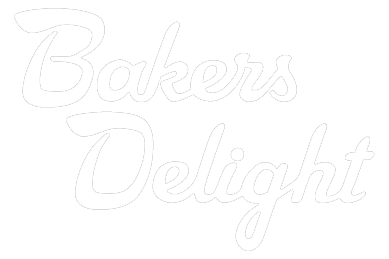
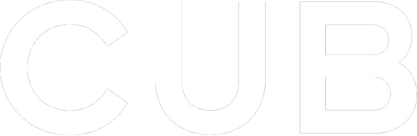


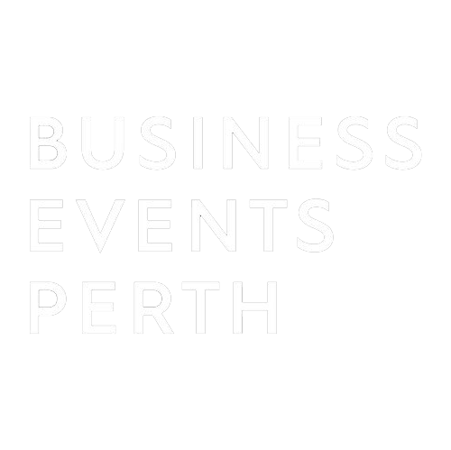

"Absolutely exceeded all our expectations and received unanimous praise from the team as the highlight of our offsite."
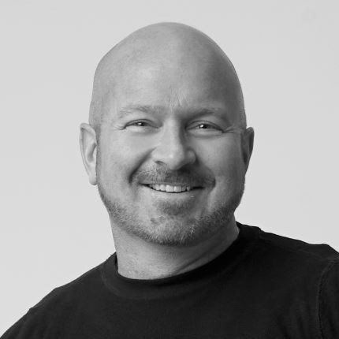
"This was huge. The best two days of my career! The practical skills Justin empowered the team with is unlocking opportunity and competitive advantage right now."
"Excited about AI as a powerful tool to enable creativity in our business."Troy Mortleman, CEO, Gale Pacific Limited
"Practical, sharp and immediately impactful. We were activated, not just inspired."Zoe Hertelendi, Managing Director, Freedom NZ
Let's Make It Happen
Option 1: Start with Phase 0
$10,000 + GST
Weeks 1-2. Zero risk. If it doesn't deliver clear value, you stop.
Option 2: Full Program
$85,000 + GST
3 months. Complete AI-native transformation. Lock it in from day one.
You already have the builders, the ambition, and the leadership clarity. This program connects the dots, fills the gaps, and builds the self-sufficiency so Quad Lock doesn't need me in six months. Let's make it the AI-native story your category talks about.
Get in touch